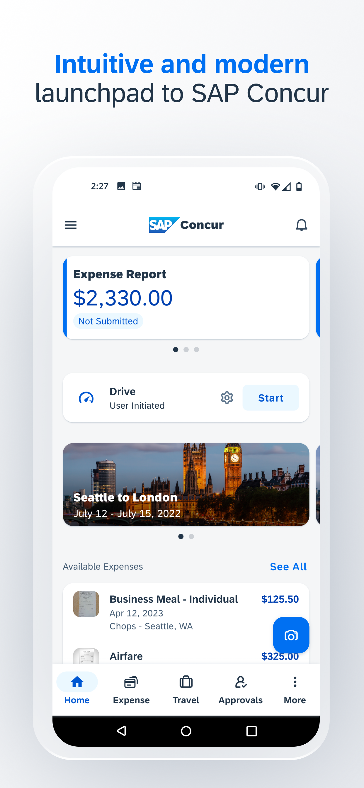

I want to tell you about an afternoon I spent asking an AI to commit an act of corporate piracy. Not real piracy, as it turned out (the distinction is the entire point).
What I actually asked it to do was something considerably more interesting, and considerably more threatening to the enterprise software industry, than simple theft. I asked it to reproduce the function of a piece of software I despise, without copying a single line of code, without infringing any copyright, without touching the original design.
I asked it to clean-room engineer an expense reporting application. Something that does everything Concur does. Built from scratch, in an afternoon, from nothing but a plain-English description of what expense reporting needs to accomplish.
It worked. And the implications for enterprise software are significant enough that I think the industry deserves a direct conversation about them.
Why Concur
I decided to pick on Concur because it is almost universally reviled. The interface feels like it was designed in 2003 and never meaningfully updated. Navigation is counterintuitive. Menus are buried. And common tasks require way more clicks than anyone could justify. First-time users need training to complete what should be simple tasks.
Here's how I did it. I gave my AI a couple of screenshots of the application and let it read the user guide and the help files. Then I asked it to write a specification for an application that did exactly what was described there. I fed that specification into another AI system and asked it to write a software system that did what the specification described.

The resulting app didn't have a back end, so there was no live data. But I could play with all the interactions and see how I felt about it and get it to work exactly the way I wanted. All while my cup of coffee was still hot.
The result was way prettier and more responsive than Concur. With a little work it could capture every expense Concur captures, enforce every rule Concur enforces, and route approvals any way I wanted. Functionally identical. Expressively original.
To understand why this matters, I need to tell you about Phoenix Technologies, and a legal technique from 1982 that just became the most dangerous idea in enterprise software.
The Clean Room
In 1981, IBM did something it had never done before. It built a computer entirely from parts sourced from other vendors. The processor came from Intel. The operating system came from Microsoft. The keyboard, the display adapter, the bus — all commodity components, publicly available to anyone.
This was a deliberate gamble. IBM's entire history was built on vertical integration (designing and manufacturing its own components so competitors couldn't replicate what it made). Building the PC from off-the-shelf parts meant any competitor could buy the same parts and build the same machine. IBM's executives knew this. They accepted the risk because they needed to move fast. The personal computer market was growing without them, and a two-year design cycle wasn't going to cut it.
But they weren't worried because they owned the BIOS. It was the first thing the machine ran when you powered it on. It initialized the hardware, found the operating system, and provided the foundational routines everything else depended on. IBM had written it themselves. IBM had copyrighted it. And IBM believed that copyright made them untouchable. You could buy the same Intel processor. You could license the same Microsoft operating system. But without a compatible BIOS, your machine couldn't run IBM PC software. And copying IBM's BIOS was infringement. That was their moat.
Phoenix Technologies, a small Massachusetts software company, had a different idea. They split their engineering team in two and built a wall between them. The first group read IBM's BIOS from top to bottom and wrote down everything it did — every function, every behavior, every input and output — in plain English. Not how it worked. Just what it did. Then they handed that document to the second group and walked away.
The second group had never seen IBM's code. Some had been recruited specifically because they hadn't. Working only from the functional specification, they built a BIOS from scratch, implementing every behavior themselves.
When IBM's lawyers compared the two programs, they found something they couldn't sue over. Identical behavior. Zero shared code. No infringement, because copyright protects expression, not function. You can't own the idea of checking whether a keyboard is plugged in. You can only own the specific way you wrote that check. Phoenix had written it differently.
IBM didn't sue. The clone industry exploded. IBM lost control of the platform it had built. And a legal technique called clean room engineering entered the books — where it sat for four decades, waiting for someone to apply it at scale.
That someone is now AI.
What SaaS Actually Sold You
Here's the thing about most SaaS companies. They didn't invent new capabilities. They built better interfaces to processes organizations already ran.
Expense reporting existed before Concur. Project tracking existed before Asana. Customer relationship management existed before Salesforce (salespeople kept those records in manila folders and Rolodexes). The SaaS companies came in and said: we have a better way to do what you're already doing. A cleaner form. A faster workflow. A browser-based UI instead of a server in the basement. They were right. It was genuinely valuable. And they charged platform prices for it.
The business model held together through a combination of real utility, long contracts, deep integrations, and the inertia that builds up when a hundred people in your organization have learned where all the buttons are. Switching was painful. So most companies didn't. And the SaaS vendors raised prices, added modules, and called the result a platform.
Most SaaS companies are actually interface companies pretending to be software companies. They charge platform prices for what is essentially a better form fill.
The SaaS Landscape
Not all SaaS is equally exposed to what's coming. Most enterprise software falls into one of a few distinct categories (with some interesting cases in between), each with different moats and different futures.
Low threat
SAP, Oracle ERP, Workday core HCM. These products hold the master record of transactions, employees, and financial history the organization depends on. Nobody replaces their ERP in a good mood. The switching cost is not the license fee — it is the eighteen-month implementation, the retraining, the integrations rebuilt from scratch, the risk of getting a journal entry wrong during a fiscal year close. AI makes them better. It does not threaten them.
Low threat
GitHub, LinkedIn, Slack. Their value isn't in the data they hold. It's in who else is already there. You cannot clean-room engineer the fact that every developer on earth has a GitHub account. The network is the product. AI strengthens this category. More tools built on the network means more reason to be in it.
High threat
Concur, Expensify, most travel management tools, many procurement point solutions, much of the project management space. These companies don't own the data. It belongs to the system underneath them. They own the workflow, the UI, and years of UX polish. That is exactly what AI can reproduce in an afternoon.
Moderate threat
Salesforce is a complicated case. It has genuine data gravity: years of customer records, pipeline history. It also has an ecosystem that is difficult to replicate. But everything built on top of it (sequence tools, call recording, forecasting overlays) is just as exposed as Concur.
What AI Changed
Phoenix's clean room process in 1982 took months. Two teams, extensive documentation, lawyers involved at every step. It worked, but it wasn't something a frustrated CFO could spin up on a Wednesday.
AI collapsed that timeline to an afternoon.
The specification stage (what Phoenix's first team spent months writing) now takes an hour. You already know what your expense reporting software needs to do. You use it every week. You have opinions about what it does wrong. Articulating the spec isn't hard when you've been living with the problem.
The implementation stage (what Phoenix's second team spent months building) now takes the rest of the afternoon. The AI comes in clean. It has never looked at Concur's code. It knows what a well-designed expense application should do because it's absorbed everything ever written about the subject. It builds from first principles, which means it builds differently.
Same legal logic as clean room engineering. Same outcome. Cost: approximately zero.
The Opportunity Half
I've spent most of this article on the threat. But the same dynamic cuts the other way.
If you're an enterprise buyer, you just got a negotiating weapon you've never had before. You don't need to actually build the replacement. You need to demonstrate credibly that you could. A working prototype of your vendor's core workflow, built in a day, changes every renewal conversation. SaaS vendors have spent twenty years banking on the cost and pain of switching. That math just changed.
If you're building a new product, the attack surface has never been wider. The cost of going up against an incumbent like Concur has collapsed. Five years ago, going up against Concur required years of development and a serious check from a VC. Today it requires an afternoon and a clear head. The companies that move on this first will take real market share from vendors that are still pricing like it's 2019.
If you're an incumbent, the path forward is visible. But only if you stop defending the wrong thing. The interface was never the real product. The real product is what you know. An expense management platform that has processed fifty million transactions knows things no clean-room replacement can touch on day one. Which expense categories flag in audits. What a normal meal bill looks like for a law firm versus a construction company. Which approval chains kill reimbursement speed and which ones don't. That institutional intelligence is the moat. The UI is not.
And there's a new category that couldn't exist before. Hyper-vertical SaaS (expense management for law firms, procurement tools for restaurant groups) never made business sense when software was expensive. It is now. The same AI that threatens generalist workflow tools makes specialist ones suddenly cheap to build. Niche is no longer a liability.
The Conversation Nobody's Having
I started this piece with a 1982 legal technique because it names what's actually happening more clearly than the usual AI hype.
Phoenix didn't steal IBM's BIOS. They described what it did, then built something that did the same thing differently. The law was on their side because function can't be owned. Only expression can. IBM had assumed their expression was so hard to replicate that the distinction didn't matter. They were wrong.
SaaS companies made the same bet. Their expression (the specific way they implemented processes organizations already needed) was hard enough to replicate that it functioned as a moat. For twenty-five years, that was true. Replicating Concur required years of engineering work and tens of millions of dollars. Nobody did it casually.
That's over.
What's still valuable is what can't be described from the outside. The data. The network effects. The institutional intelligence that only accumulates over years of real transactions. The companies that know this and act on it will be fine. The ones still pointing to their UI as their competitive advantage are going to find out what IBM found out in 1983.
Someone is going to describe exactly what their product does.
And build it differently. Before their coffee gets cold.